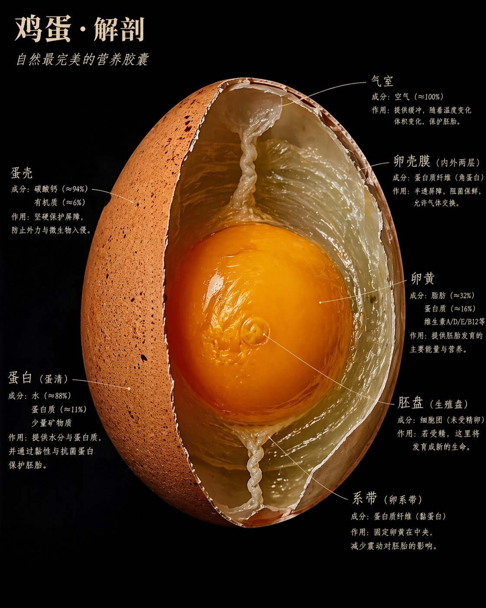
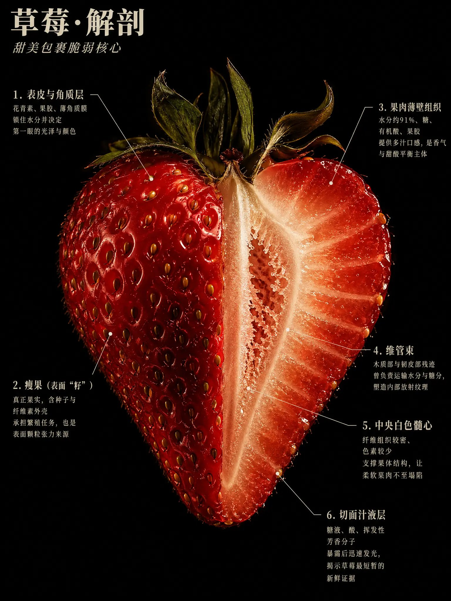
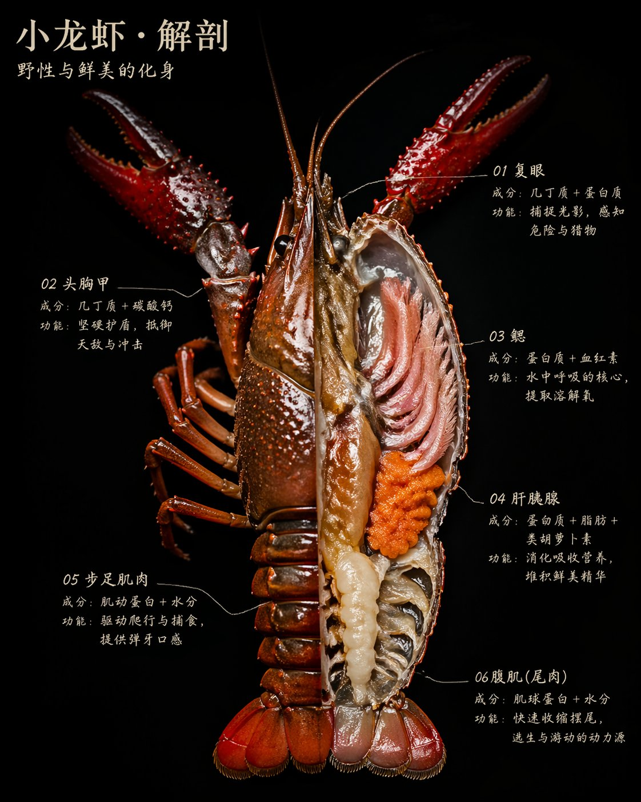
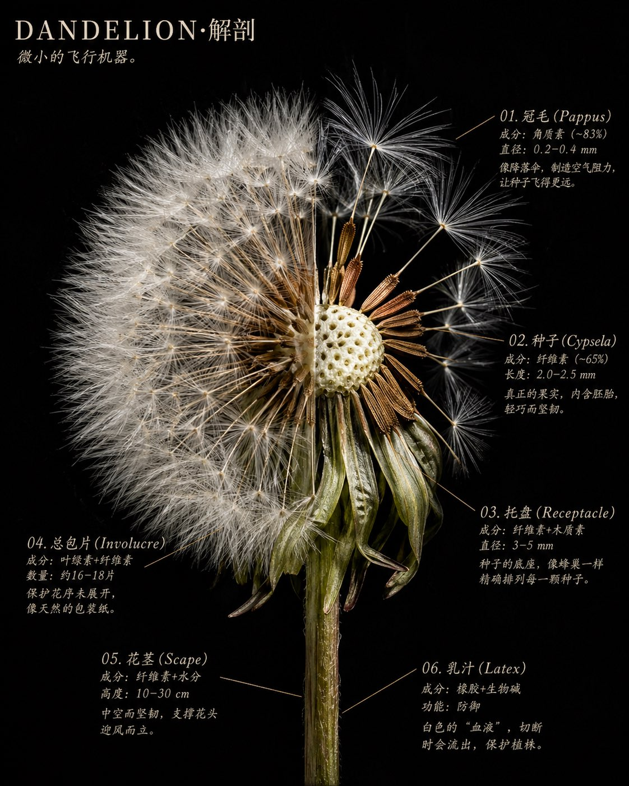
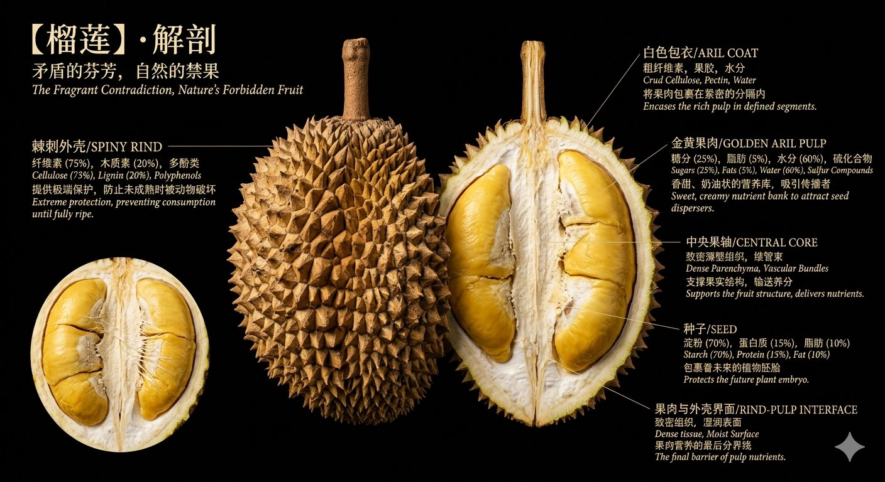

GPT-IMAGE 2SPECIMEN PROMPT01 / 07
Prompt Cookbook · 小白照填版
复制这段提示词
改括号就能用
不用会写 prompt。你只要把方括号里的内容换成自己的食物。

想做这种“食物解剖图”？照着后面的模板填空，然后丢给 GPT-Image 2。
Prompt Cookbook · 小白照填版
不用会写 prompt。你只要把方括号里的内容换成自己的食物。
想做这种“食物解剖图”？照着后面的模板填空，然后丢给 GPT-Image 2。

比如：鸡蛋、草莓、榴莲、鲍鱼、小龙虾。
不要写“水果”。要写“草莓”“石榴”“牛油果”。
越常见，用户越容易看懂效果，比如鸡蛋。
把[食物名称]全部换成同一个名字。

例：红色、有籽、湿润、有光泽。
例：白色髓心、果肉纹理、汁液层。
不要怕不专业，先把你看见的东西写出来。



每个标注都按这个格式：
名字 / 成分 / 作用。
不会写成分就写常识，大概也可以。重点是让画面有标注。
先发案例图，再把完整 prompt 发给大家照着改。
一张图一个食物，很适合做“AI 作图玩法”。
食物、植物、海鲜、甜品都能做成一组。
图片负责降低理解成本。正文负责承载完整提示词。